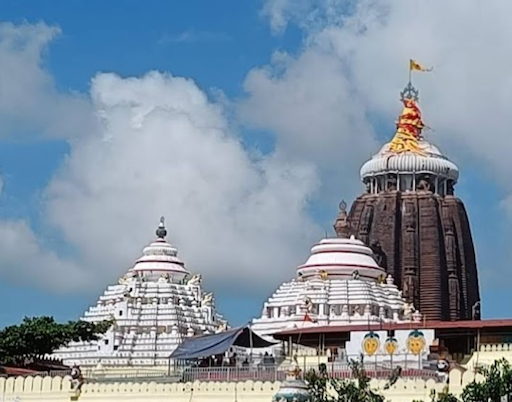

Jagannath Temple
The Jagannath Temple, located in Puri, Odisha, is one of the four sacred Char Dham pilgrimage sites in India. Dedicated to Lord Jagannath, an incarnation of Lord Vishnu, it is renowned for its annual Rath Yatra, where deities are paraded on massive chariots.